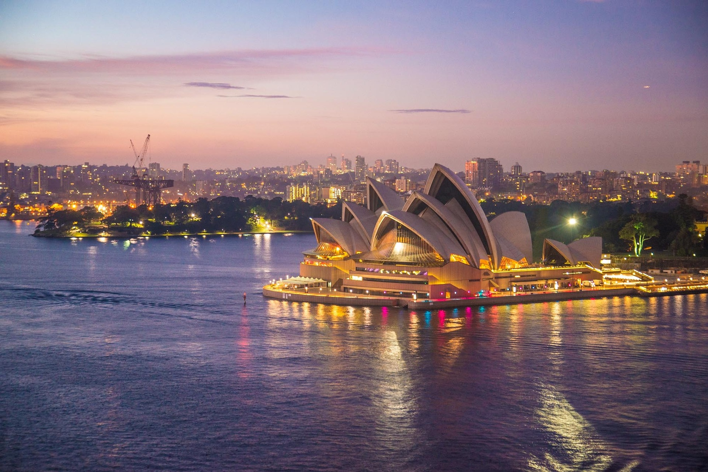

Flip Cards

Paris
Paris is the capital and most populous city of France, Paris is a major railway, highway, and air-transport hub served by two international airports.

Osaka
Osaka is a designated city. Osaka is a major financial center of Japan, and it is recognized as one of the most multicultural and cosmopolitan cities in Japan.

Sydney
Sydney is the capital city of the state of New South Wales.
Despite being one of the most expensive cities in the world, Sydney frequently ranks in the top ten most liveable cities in the world.